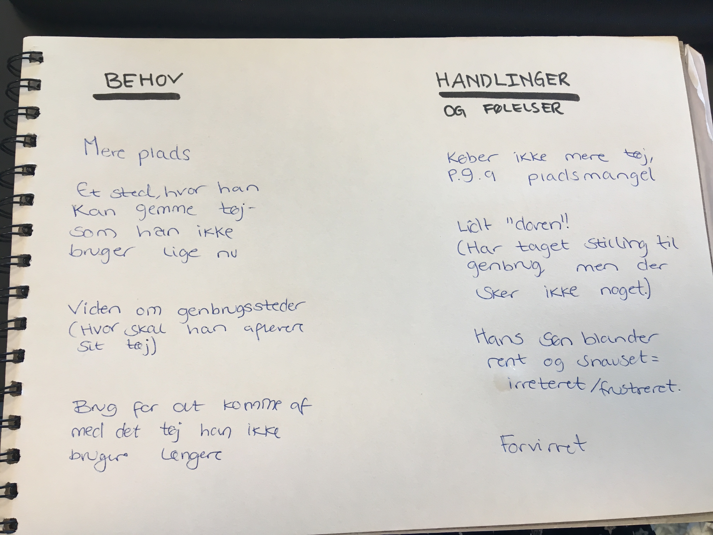

Brugerinterview
Klædeskabs-interview
What - HVAD sker der?
Han køber ikke tøj, da han ikke har plads. Han mangler plads til sit og sine børns tøj. Han vil gerne skaffe sig af med det gamle tøj, som han ikke bruger og det slidte tøj vil han gerne have til genbrug, men er i tvivl om hvor han skal aflevere det.
How - HVORDAN gør brugeren?
Han tager stilling til genrugsmuligheder, men er "doven"/gør ikke noget ved det.
Why - HVORFOR gør brugeren det? -
Han vil skaffe sig af med tøjet, for at skaffe mere plads.

Interview af Celina
- Hvad er din nuværende klædeskabssituration og hvad kan du gøre for at få den bedre?
- Hvad kan du gøre for at løse problemet/problemerne?
- Hvad gør du med det tøj du ikke bruger?
What - HVAD sker der?
Celina har for mange sko og for meget tøj ift plads. Hun har tøj liggende på loftet, som hun gerne vil have solgt. Der er tøj i hendes skab, hun aldrig bruger
How - HVORDAN gør brugeren?
Hun vil gerne sælge sit brugte/gamle tøj/sko, som hun ikke bruger mere enten online eller på et loppemarket.
Why - HVORFOR gør brugeren det? -
Hun er træt af pladsmangel og for doven til at sælge sit gamle tøj.